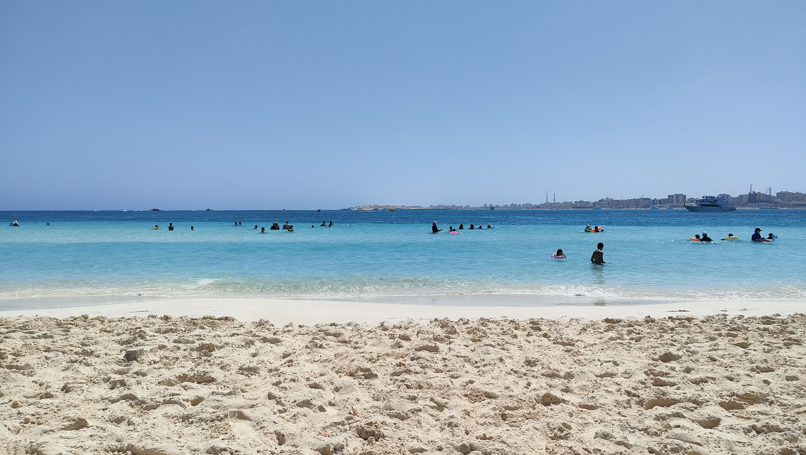

Alexandria "Bride of the Mediterranean"
Al-Montazah Beach

Al-Montazah Beach is known for its royal history and crystal clear water
Goledn Joel Beach

A luxurious private beach with a stunning panoramic view and upscale cafes.
Miami Beach

Miami is one of Alexandria's most vibrant districts, famous for its lively beach, the iconic Beir Masoud rocks, and the bustling Khalid Ibn Al-Walid shopping street
Alexandria Corniche

The historic heart of the city, perfect for long walks by the sea with a view of old architectural landmarks
The Sunken Ship of Alexandria

Famous for its appearance in "The Blue Elephant 2," Alexandria's Sunken Ship is a moody coastal landmark blending cinematic history with Mediterranean beauty.
El Max Church Island

El Max Church Island is a historic lighthouse in Alexandria, famous for its unique architecture that resembles a church.
Alexandria Yacht Marina

Enjoy a breathtaking sunset at the Alexandria Yacht Marina, where luxury yachts meet the historic charm of the Eastern Harbor.
Marsa Matrouh
Elgharam Beach

Elgharam Beach is one of Marsa Matrouh's most famous landmarks, known for its crystal-clear turquoise waters and soft white sands.
Ageba Beach

The view from the top of the cliff in Agiba is absolutely breathtaking.
Cleopatra Beach

Exploring the ancient legend of Queen Cleopatra at this stunning beach is an unforgettable experience.
Al-Afrad Island

A teardrop-shaped natural gem known for shallow lagoons, pristine sands, and local tribal heritage.
Wadi Al-Qasaba

A scenic coastal spot featuring dramatic rock formations and vibrant, layered turquoise waters.
Bagoush Resort & Coast

A developing hotspot where rugged rocky shores meet soft beaches and crystal-clear resort lagoons.
Rommel Beach

A famous, calm bay with shallow waters and unique sandbanks, named after the historic Field Marshal.
Port Said
Al-Fayrouz Beach

Finding peace and tranquility at the stunning Al-Fayrouz Beach.
Doaa Al-Karawan Beach

Doaa Al-Karawan Beach is famous for its peaceful atmosphere and its name which is inspired by a classic Egyptian novel.
Al-Gamil Beach

Al-Gamil Beach is a famous spot for fishing enthusiasts and those seeking ultimate privacy.
Shooting Club Beach

The Shooting Club Beach is known for its exclusive atmosphere and high-quality services.
Port Said Beach

Port Said Beach is famous for offering a unique view of giant ships crossing the Suez Canal, creating a scene found nowhere else in the world.
Ashtoum El-Gamil Protectorate

Ashtoum El-Gamil is a stunning natural protectorate located at the eastern end of Lake Manzala, serving as a vital sanctuary for thousands of migratory birds.
Port Said Tourist Walkway

The Port Said Tourist Walkway offers a magnificent view of the Suez Canal, where you can watch world-class ships passing just a few meters away.